Общие сведения о двусторонних возможностях в WPF
В отличие от других платформ разработки WPF имеет множество функций, поддерживающих быструю разработку двунаправленного содержимого, например, направленного как слева направо и справа налево в одном документе. В то же время WPF имеет превосходный интерфейс для пользователей, которым необходимы двунаправленные возможности, такие как арабский и иврит, пользователям, говорящим.
В следующих разделах описаны различные возможности двунаправленного письма с примерами, иллюстрирующими способы достижения наилучшего отображения двунаправленного содержимого на экране. В большинстве примеров используется XAML, хотя вы можете легко применить концепции, чтобы C# или Microsoft Visual Basic.
FlowDirection
Основным свойством, определяющим направление потока содержимого в WPF приложение FlowDirection. Это свойство может быть присвоено одно из двух значений перечисления, LeftToRight или RightToLeft. Свойство доступно для всех WPF элементы, которые наследуются от FrameworkElement.
В следующем примере задается направление потока TextBox элемент.
Направление потока слева направо
<TextBlock Background="DarkBlue" Foreground="LightBlue"
FontSize="20" FlowDirection="LeftToRight">
This is a left-to-right TextBlock
</TextBlock>
Направление потока справа налево
<TextBlock Background="LightBlue" Foreground="DarkBlue"
FontSize="20" FlowDirection="RightToLeft">
This is a right-to-left TextBlock
</TextBlock>
На следующем рисунке показано, как работает указанный код.
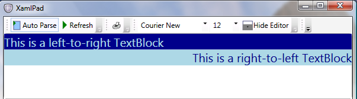
Элемент в пределах пользовательский интерфейс дерева будут наследовать FlowDirection из своего контейнера. В следующем примере TextBlock находится внутри Grid, который находится внутри Window. Установка FlowDirection для Window это значение для Grid и TextBlock также.
В следующем примере показано задание FlowDirection.
<Window
xmlns="http://schemas.microsoft.com/winfx/2006/xaml/presentation"
xmlns:x="http://schemas.microsoft.com/winfx/2006/xaml"
x:Class="FlowDirectionApp.Window1"
Title="BidiFeatures" Height="200" Width="700"
FlowDirection="RightToLeft">
<Grid>
<Grid.ColumnDefinitions>
<ColumnDefinition/>
<ColumnDefinition/>
</Grid.ColumnDefinitions>
<TextBlock Grid.Column="0" >
This is a right-to-left TextBlock
</TextBlock>
<TextBlock Grid.Column="1" FlowDirection="LeftToRight">
This is a left-to-right TextBlock
</TextBlock>
</Grid>
</Window>
Верхний уровень Window имеет RightToLeftFlowDirection, поэтому все элементы, содержащиеся в нем, наследуют то же FlowDirection. Элемент мог переопределить заданное FlowDirection его необходимо добавить явное изменение направления как во втором TextBlock в предыдущем примере, который изменяет на LeftToRight. Если аргумент FlowDirection определен, по умолчанию LeftToRight применяется.
На следующем рисунке показан в предыдущем примере выходных данных:
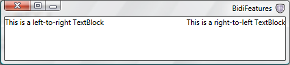
FlowDocument
Многие платформы разработки, такие как HTML, Win32 и Java, обеспечивают специальную поддержку разработки двунаправленного содержимого. Языки разметки, такие как HTML предоставляют авторам содержимого необходимые средства разметки для отображения текста в любом требуемом направлении, например HTML 4.0 тег, «dir», который принимает в качестве значения «rtl» или «ltr». Этот тег аналогичен FlowDirection свойство, но FlowDirection свойство работает в более сложных способов для разметки текста и может использоваться для нетекстового содержимого.
В WPF, FlowDocument является универсальным ИП элемент, который может содержать сочетание текста, таблиц, изображений и других элементов. Этот элемент используется в примерах, описанных ниже.
Добавление текста к FlowDocument можно сделать более таким образом один. Простой способ сделать это – Paragraph которого является элемент уровня блока, используемый для группировки содержимого, такие как текст. Добавление текста в элементы встроенного уровня, в примерах используются Span и Run. Span — Это элемент содержимого потока встроенного уровня, используемый для группировки других встроенных элементов, хотя Run является элемент предназначен для содержания цепочки неформатированного текста содержимого потока встроенного уровня. Объект Span может содержать несколько Run элементов.
Первый пример документа содержит документ, который имеет несколько сетевых совместно используемых имен; например \\server1\folder\file.ext. Независимо от того на каком языке написан документ, в котором содержится эта сетевая ссылка, на арабском или английском, нам хотелось бы, чтобы он выглядел всегда одинаково. Приведенный ниже рисунок иллюстрирует использование элемента Span и показана ссылка в арабском RightToLeft документа:
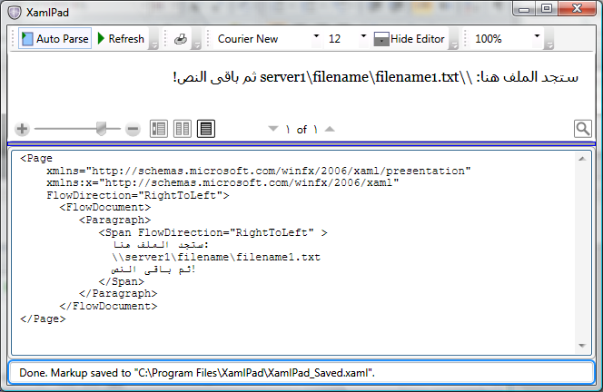
Поскольку текст RightToLeft, все специальные символы, такие как "\«, разделяют текст справа налево. Результаты в ссылке, не отображаются в правильном порядке, поэтому для решения проблемы, текст необходимо внедрить, чтобы сохранить отдельного Run передаваемых LeftToRight. Создавать отдельные Run для каждого языка, более эффективный способ решения проблемы является внедрить реже используемый текст на английском языке в больших арабский Span.
Следующий рисунок иллюстрирует это с помощью элемента Run, внедренный в элемент Span:
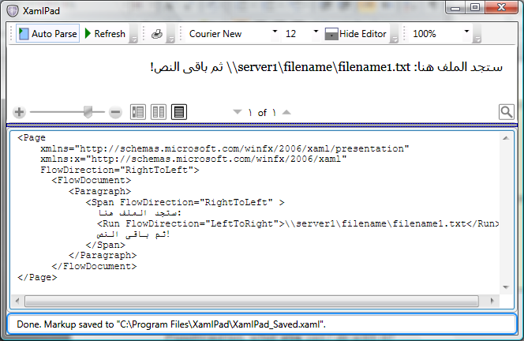
В следующем примере показано использование Run и Span элементов в документах.
<Page
xmlns="http://schemas.microsoft.com/winfx/2006/xaml/presentation"
xmlns:x="http://schemas.microsoft.com/winfx/2006/xaml"
FlowDirection="RightToLeft">
<FlowDocument>
<Paragraph>
<Span FlowDirection="RightToLeft" >
ستجد الملف هنا:
<Run FlowDirection="LeftToRight">
\\server1\filename\filename1.txt</Run>
ثم باقى النص!
</Span>
</Paragraph>
</FlowDocument>
</Page>
Элементы Span
Span Элемент работает в качестве разделителя между фрагментами текста с различными направлениями потоков. Даже Span считаются элементы с одинаковыми направлениями потока имеют разные двунаправленные области, т. е Span элементы упорядочены в контейнере FlowDirection, только содержимое внутри Span элемент следует за FlowDirection из Span.
На следующем рисунке показано направление потока нескольких TextBlock элементов.
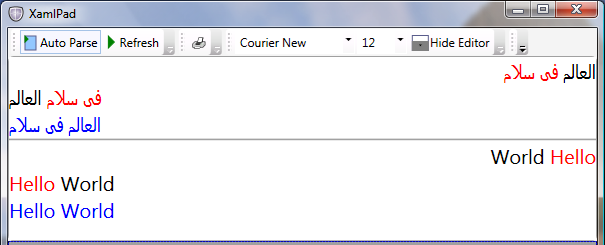
В следующем примере показано, как использовать Span и Run элементов для получения результатов, представленных на предыдущем рисунке.
<Page xmlns="http://schemas.microsoft.com/winfx/2006/xaml/presentation">
<StackPanel >
<TextBlock FontSize="20" FlowDirection="RightToLeft">
<Run FlowDirection="LeftToRight">العالم</Run>
<Run FlowDirection="LeftToRight" Foreground="Red" >فى سلام</Run>
</TextBlock>
<TextBlock FontSize="20" FlowDirection="LeftToRight">
<Run FlowDirection="RightToLeft">العالم</Run>
<Run FlowDirection="RightToLeft" Foreground="Red" >فى سلام</Run>
</TextBlock>
<TextBlock FontSize="20" Foreground="Blue">العالم فى سلام</TextBlock>
<Separator/>
<TextBlock FontSize="20" FlowDirection="RightToLeft">
<Span Foreground="Red" FlowDirection="LeftToRight">Hello</Span>
<Span FlowDirection="LeftToRight">World</Span>
</TextBlock>
<TextBlock FontSize="20" FlowDirection="LeftToRight">
<Span Foreground="Red" FlowDirection="RightToLeft">Hello</Span>
<Span FlowDirection="RightToLeft">World</Span>
</TextBlock>
<TextBlock FontSize="20" Foreground="Blue">Hello World</TextBlock>
</StackPanel>
</Page>
В TextBlock элементы в этом примере Span элементы располагаются в соответствии с FlowDirection их родительские элементы, но текст внутри каждого Span элемент последовательности согласно своему собственному FlowDirection. Это применимо для латинского, арабского или любого другого языка.
Добавление XML: lang
Приведенный ниже рисунок показывает другой пример, использующий числа и арифметические выражения, такие как "200.0+21.4=221.4". Обратите внимание на то, что только FlowDirection имеет значение.
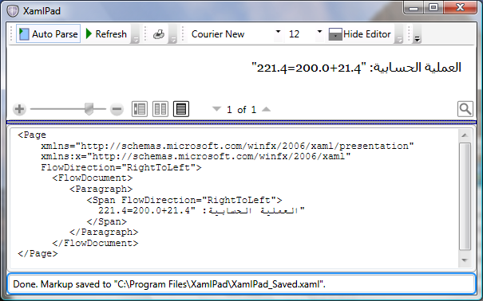
Пользователи данного приложения будут разочарованы выходные данные, даже если FlowDirection правильно чисел не так, как должны быть отформатированы числа на арабском языке.
Элементы XAML могут включать XML атрибут (xml:lang), определяющий язык каждого элемента. XAML также поддерживает XML языковой принцип при котором xml:lang значения, применяющиеся к родительским элементам в дереве, используются дочерние элементы. В предыдущем примере так как язык не был определен для Run элемента или любой из его свойство top на уровне элементов, по умолчанию xml:lang использовался, который является en-US для XAML. Внутренняя алгоритму формирования чисел Windows Presentation Foundation (WPF) числа выбираются в соответствии с языком – в данном случае английский. Чтобы арабские числа отображались правильно xml:lang необходимо задать.
На следующем рисунке показан пример с xml:lang добавлен.
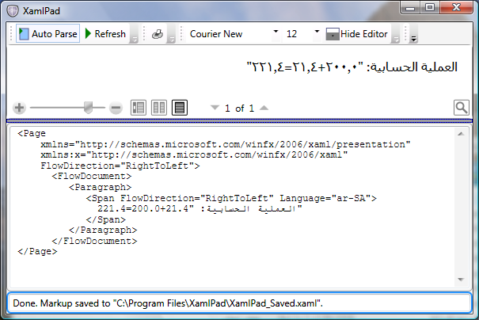
В следующем примере добавляется xml:lang в приложение.
<Page
xmlns="http://schemas.microsoft.com/winfx/2006/xaml/presentation"
xmlns:x="http://schemas.microsoft.com/winfx/2006/xaml"
FlowDirection="RightToLeft">
<FlowDocument>
<Paragraph>
<Span FlowDirection="RightToLeft" Language="ar-SA">
العملية الحسابية: "200.0+21.4=221.4"
</Span>
</Paragraph>
</FlowDocument>
</Page>
Имейте в виду, что во многих языках применяются различные xml:lang значения в зависимости от целевого региона, например, "ar-SA" и "ar-EG" представляют собой два диалекта арабского языка. В предыдущих примерах показано, что необходимо определить оба xml:lang и FlowDirection значения.
Направление потока применительно к нетекстовым элементам
FlowDirection Определяет не только направление текста в текстовом элементе, но также направление потока в практически любом другом ИП элемент. Показано на следующем рисунке ToolBar , использующая горизонтальную LinearGradientBrush для рисования фона с левой к правой градиента.
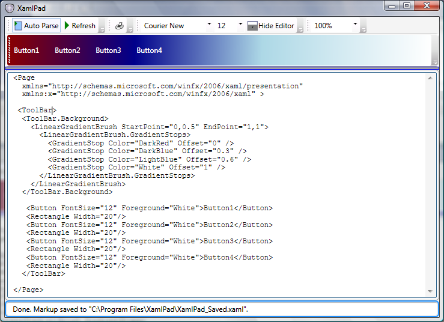
После задания FlowDirection для RightToLeft, не только ToolBar кнопки будут располагаться справа налево, но даже LinearGradientBrush перестраивает свои смещения в направлении справа налево.
На следующем рисунке показано перестроение элемента LinearGradientBrush.
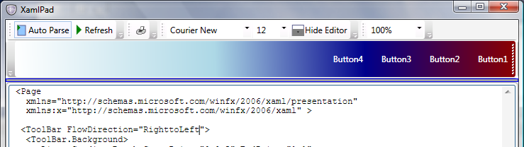
В следующем примере рисуется RightToLeftToolBar. (Чтобы нарисовать его слева направо, удалите FlowDirection атрибут ToolBar.
<Page
xmlns="http://schemas.microsoft.com/winfx/2006/xaml/presentation"
xmlns:x="http://schemas.microsoft.com/winfx/2006/xaml">
<ToolBar FlowDirection="RightToLeft" Height="50" DockPanel.Dock="Top">
<ToolBar.Background>
<LinearGradientBrush StartPoint="0,0.5" EndPoint="1,1">
<LinearGradientBrush.GradientStops>
<GradientStop Color="DarkRed" Offset="0" />
<GradientStop Color="DarkBlue" Offset="0.3" />
<GradientStop Color="LightBlue" Offset="0.6" />
<GradientStop Color="White" Offset="1" />
</LinearGradientBrush.GradientStops>
</LinearGradientBrush>
</ToolBar.Background>
<Button FontSize="12" Foreground="White">Button1</Button>
<Rectangle Width="20"/>
<Button FontSize="12" Foreground="White">Button2</Button>
<Rectangle Width="20"/>
<Button FontSize="12" Foreground="White">Button3</Button>
<Rectangle Width="20"/>
<Button FontSize="12" Foreground="White">Button4</Button>
<Rectangle Width="20"/>
</ToolBar>
</Page>
Исключения направления потока
Существует несколько вариантов где FlowDirection некорректно. В этом разделе рассматриваются два таких исключения.
Изображение
Image Представляет элемент управления, отображающий изображение. В XAML он может использоваться с Source свойство, определяющее универсальный идентификатор ресурса (URI) из Image для отображения.
В отличие от других ИП элементов, Image не наследует FlowDirection из контейнера. Тем не менее если FlowDirection явно присвоено RightToLeft, Image отображается перевернутым по горизонтали. Это сделано для удобства разработчиков двунаправленного содержимого. В некоторых случаях горизонтальным отражением достигается требуемый эффект.
На следующем рисунке показано перевернутое Image.
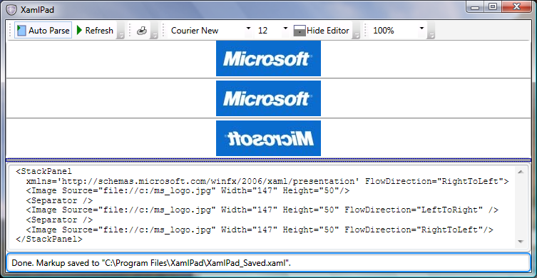
В следующем примере показано, что Image не наследует FlowDirection из StackPanel , которая его содержит. Примечание необходимо иметь файл с именем ms_logo.jpg на C:\ диск для запуска этого примера.
<StackPanel
xmlns='http://schemas.microsoft.com/winfx/2006/xaml/presentation'
FlowDirection="RightToLeft">
<Image Source="file://c:/ms_logo.jpg"
Width="147" Height="50"/>
<Separator Height="10"/>
<Image Source="file://c:/ms_logo.jpg"
Width="147" Height="50" FlowDirection="LeftToRight" />
<Separator Height="10"/>
<Image Source="file://c:/ms_logo.jpg"
Width="147" Height="50" FlowDirection="RightToLeft"/>
</StackPanel>
Примечание включенные в загружаемые файлы — ms_logo.jpg файл. В коде предполагается, что JPG-файл находится не внутри проекта, а где-нибудь на диске C:. Необходимо скопировать JPG-файл из файлов проекта на диск C:\ или изменить код так, чтобы выполнялся поиск файла внутри проекта. Чтобы сделать это, измените Source="file://c:/ms_logo.jpg" для Source="ms_logo.jpg".
Пути
В дополнение к Image, еще один интересный элемент Path. Контур — это объект, который может нарисовать последовательность соединенных линий и кривых. Он ведет себя так же, как Image относительно его FlowDirection, например его RightToLeftFlowDirection является горизонтальным отражением элемента его LeftToRight один. Однако в отличие от Image, Path наследует его FlowDirection из контейнера и не требуется указывать явно.
В следующем примере рисуется простая стрелка, использующая три линии. Первая стрелка наследует RightToLeft направление из потока StackPanel таким образом, чтобы его начальная и конечная точки отсчитываются от корня на правой стороне. Вторая стрелка, который явно RightToLeftFlowDirection также начинается справа от оператора. Однако третья стрелка начинается от корня с левой стороны. Дополнительные сведения о рисовании см. в разделе LineGeometry и GeometryGroup.
<StackPanel
xmlns='http://schemas.microsoft.com/winfx/2006/xaml/presentation'
FlowDirection="RightToLeft">
<Path Stroke="Blue" StrokeThickness="4">
<Path.Data>
<GeometryGroup >
<LineGeometry StartPoint="300,10" EndPoint="350,30" />
<LineGeometry StartPoint="10,30" EndPoint="352,30" />
<LineGeometry StartPoint="300,50" EndPoint="350,30" />
</GeometryGroup>
</Path.Data>
</Path>
<Path Stroke="Red" StrokeThickness="4" FlowDirection="RightToLeft">
<Path.Data>
<GeometryGroup >
<LineGeometry StartPoint="300,10" EndPoint="350,30" />
<LineGeometry StartPoint="10,30" EndPoint="352,30" />
<LineGeometry StartPoint="300,50" EndPoint="350,30" />
</GeometryGroup>
</Path.Data>
</Path>
<Path Stroke="Green" StrokeThickness="4" FlowDirection="LeftToRight">
<Path.Data>
<GeometryGroup >
<LineGeometry StartPoint="300,10" EndPoint="350,30" />
<LineGeometry StartPoint="10,30" EndPoint="352,30" />
<LineGeometry StartPoint="300,50" EndPoint="350,30" />
</GeometryGroup>
</Path.Data>
</Path>
</StackPanel>
На следующем рисунке показан в предыдущем примере выходных данных с помощью стрелки, нарисованные с помощью Path элемент:
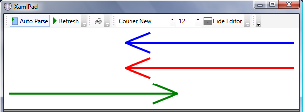
Image И Path приведены два примера того, как Windows Presentation Foundation (WPF) использует FlowDirection. Рядом с макетом ИП элементы в определенном направлении в контейнере, FlowDirection можно использовать с элементами, такие как InkPresenter отображаемое на поверхности, LinearGradientBrush, RadialGradientBrush. Каждый раз, когда требуется расположить справа налево содержимое, которое имитирует расположение слева направо, или наоборот, Windows Presentation Foundation (WPF) предоставит вам такую возможность.
Подстановки чисел
Исторически сложилось так, что Windows поддерживала подстановку чисел, позволяя представления различных культурных фигур для одних цифр во время сохранения внутреннего хранения этих цифр, объединенных в разных языковых стандартах, например, числа хранятся в их известное шестнадцатеричных значений, 0x40, 41, а отображаются в соответствии с выбранного языка.
Это позволяет приложениям обрабатывать числовые данные без необходимости преобразовать их с одного языка на другой, например, пользователь может открыть Microsoft Excel электронную таблицу в локализованных арабский Windows числа на арабском языке и открыть его в европейскую версию Windows он увидит европейское представление тех же чисел. Это также необходимо для других символов, например запятая или символ процента, так как они обычно сопровождают числа в одном документе.
Windows Presentation Foundation (WPF) продолжает традицию и добавляет новые для этого средства, позволяющие пользователю более точно контролировать время и способ подстановки используется. Эта функция может использоваться со всеми языками, но особенно полезна она в обработке двунаправленного содержимого, когда представление чисел для разных региональных стандартов становится проблемой для разработчиков приложений, предназначенных для использования в разных странах.
Основным свойством, управляющим способом подстановки чисел работает Windows Presentation Foundation (WPF) является Substitution свойства зависимостей. NumberSubstitution Класс указывает, как должны отображаться числа в тексте. Он имеет три открытых свойства, определяющих его поведение. Ниже приведен краткий обзор каждого из свойств.
CultureSource:
Это свойство задает способ определения регионального стандарта для чисел. Оно принимает одно из трех NumberCultureSource значений перечисления.
Переопределение: Региональный стандарт для чисел, — это CultureOverride свойство.
Text: Региональный стандарт для чисел определяется по региональному стандарту текстовой цепочки. В разметке, это было бы
xml:lang, или его псевдонимLanguageсвойство (Language или Language). Кроме того, он используется по умолчанию для классов, производных от FrameworkContentElement. Эти классы включают System.Windows.Documents.Paragraph, System.Windows.Documents.Table, System.Windows.Documents.TableCell и т. д.Пользователь: Региональный стандарт для чисел определяется по региональному стандарту текущего потока. Это свойство имеет значение по умолчанию для всех подклассов FrameworkElement например Page, Window и TextBlock.
CultureOverride.
CultureOverride Свойство используется только в том случае, если CultureSource свойству Override и учитывается, в противном случае. Оно определяет региональный стандарт для чисел. Значение null, значение по умолчанию, интерпретируется как en US.
Substitution.
Это свойство определяет выполняемый тип подстановки чисел. Оно принимает одно из следующих NumberSubstitutionMethod значений перечисления.
AsCulture: Метод подстановки определяется на основании региональных параметров чисел NumberFormatInfo.DigitSubstitution свойство. Это значение по умолчанию.
Context: Если региональный стандарт для чисел арабский "или" Персидский языка и региональных параметров, он указывает, что цифры зависят от контекста.
European: Числа всегда визуализируются как европейские цифры.
NativeNational: Числа отображаются с использованием национальных цифр для региональный стандарт для чисел, как указано в региональных параметрах NumberFormat.
Traditional: Числа отображаются с использованием традиционных цифр для языка и региональных чисел. Для большинства языков и региональных параметров, это так же, как NativeNational. Тем не менее NativeNational результатов цифр на римские для некоторых арабских языков, тогда как это значение в арабских цифрах для всех арабских языков.
О чем говорят эти значения разработчикам двунаправленного содержимого? В большинстве случаев разработчику достаточно только для определения FlowDirection и язык каждого текстового ИП элемент, например Language="ar-SA" и NumberSubstitution логики отвечает за отображение чисел в соответствии с правильным ИП. В следующем примере показано использование английских и арабских чисел в Windows Presentation Foundation (WPF) приложения, работающего в арабской версии Windows.
<Page
xmlns="http://schemas.microsoft.com/winfx/2006/xaml/presentation"
xmlns:x="http://schemas.microsoft.com/winfx/2006/xaml" >
<StackPanel>
<TextBlock Background="LightGreen" FontSize="32"
Language="ar-SA" FlowDirection="RightToLeft">1+2=3</TextBlock>
<TextBox Background="LightGreen" FontSize="32"
Language="ar-SA" FlowDirection="RightToLeft">1+2=3</TextBox>
<TextBlock Background="LightBlue" FontSize="32">1+2=3</TextBlock>
<TextBox Background="LightBlue" FontSize="32">1+2=3</TextBox>
</StackPanel>
</Page>
Приведенный ниже рисунок показывает результат выполнения предыдущего примера, если у вас в арабской версии Windows с помощью арабских и английских чисел, отображаемых:
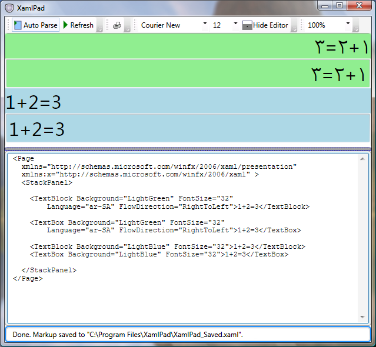
FlowDirection Был важные таким образом, поскольку настройка параметра FlowDirection для LeftToRight вместо этого будут отображаться европейские цифры. В следующих разделах рассматривается, как сделать одинаковое отображение цифр по всему документу. Если этот пример не выполняется на арабской версии Windows, все цифры отображаются на экране как европейские цифры.
Определение правил подстановки
В реальном приложении может возникнуть необходимость установить язык программным путем. Например, вы хотите задать xml:lang атрибут, который будет таким же, как используется в системе ИП, или требуется изменять язык в зависимости от состояния приложения.
Если вы хотите внести изменения на основании состояния приложения, использование других возможностей, предоставляемых Windows Presentation Foundation (WPF).
Во-первых, установите компонент приложения NumberSubstitution.CultureSource="Text". С помощью этого параметра гарантирует, что параметры не будут извлекаться из ИП для текстовых элементов, содержащих «User» по умолчанию, таких как TextBlock.
Пример:
<TextBlock
Name="text1" NumberSubstitution.CultureSource="Text">
1234+5679=6913
</TextBlock>
В соответствующем C# кода; задание Language свойство, к примеру, чтобы "ar-SA".
text1.Language = System.Windows.Markup.XmlLanguage.GetLanguage("ar-SA");
Если необходимо задать Language свойства языка пользовательского интерфейса текущего пользователя с помощью следующего кода.
text1.Language = System.Windows.Markup.XmlLanguage.GetLanguage(System.Globalization.CultureInfo.CurrentUICulture.IetfLanguageTag);
CultureInfo.CurrentCulture представляет текущий язык и региональные параметры, используемые текущим потоком во время выполнения.
Окончательный XAML пример должен быть аналогично приведенному ниже.
<Page x:Class="WindowsApplication.Window1"
xmlns="http://schemas.microsoft.com/winfx/2006/xaml/presentation"
xmlns:x="http://schemas.microsoft.com/winfx/2006/xaml"
Title="Code Sample" Height="300" Width="300"
>
<StackPanel>
<TextBlock Language="ar-SA"
FlowDirection="RightToLeft">عربى: 1+2=3
</TextBlock>
<TextBlock Language="ar-SA"
FlowDirection="RightToLeft"
NumberSubstitution.Substitution="European">عربى: 1+2=3
</TextBlock>
</StackPanel>
</Page>
Окончательный C# пример должен быть следующего вида.
namespace BidiTest
{
public partial class Window1 : Window
{
public Window1()
{
InitializeComponent();
string currentLanguage =
System.Globalization.CultureInfo.CurrentCulture.IetfLanguageTag;
text1.Language = System.Windows.Markup.XmlLanguage.GetLanguage(currentLanguage);
if (currentLanguage.ToLower().StartsWith("ar"))
{
text1.FlowDirection = FlowDirection.RightToLeft;
}
else
{
text1.FlowDirection = FlowDirection.LeftToRight;
}
}
}
}
Приведенный ниже рисунок показывает, как выглядит окно для любого языка программирования, отображение арабских чисел:
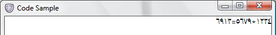
Использование свойства подстановки
Способ подстановки числа работает Windows Presentation Foundation (WPF) зависит от языка текстового элемента и его FlowDirection. Если FlowDirection слева направо, а затем будут отображаться европейские цифры. Тем не менее если ему предшествует текст на арабском языке или задан язык «ar» и FlowDirection является RightToLeft, вместо этого будут отображаться арабские цифры.
В некоторых случаях может потребоваться создание универсального приложения, например с европейскими цифрами для всех пользователей. Или арабские цифры в Table ячейки с определенным Style. Один простой способ выполнения задачи, использующего Substitution свойство.
В следующем примере первый TextBlock имеет Substitution свойство задано, поэтому отображаются арабские цифры должным образом. Однако во втором TextBlockзадана подстановка в европейском стандарте переопределяет замену по умолчанию для арабских чисел и отображаются европейские цифры.
<Page x:Class="WindowsApplication.Window1"
xmlns="http://schemas.microsoft.com/winfx/2006/xaml/presentation"
xmlns:x="http://schemas.microsoft.com/winfx/2006/xaml"
Title="Code Sample" Height="300" Width="300"
>
<StackPanel>
<TextBlock Language="ar-SA"
FlowDirection="RightToLeft">عربى: 1+2=3
</TextBlock>
<TextBlock Language="ar-SA"
FlowDirection="RightToLeft"
NumberSubstitution.Substitution="European">عربى: 1+2=3
</TextBlock>
</StackPanel>
</Page>